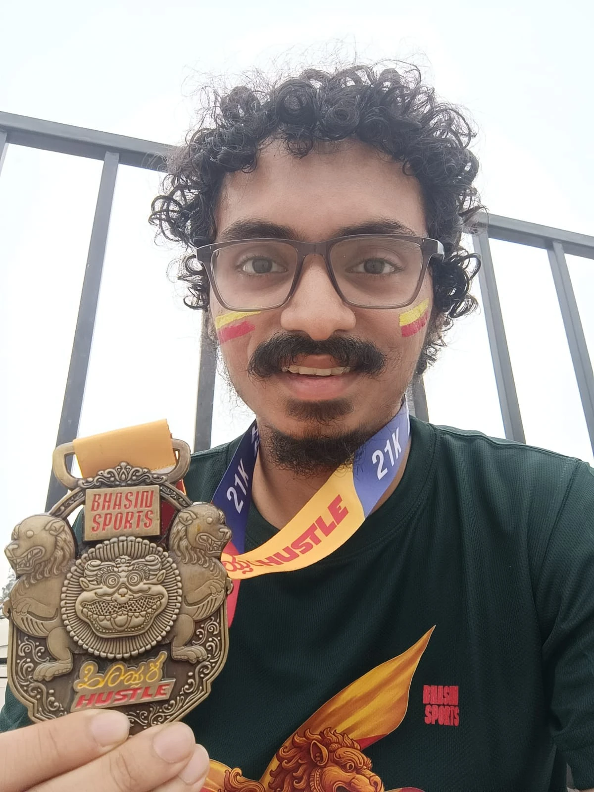
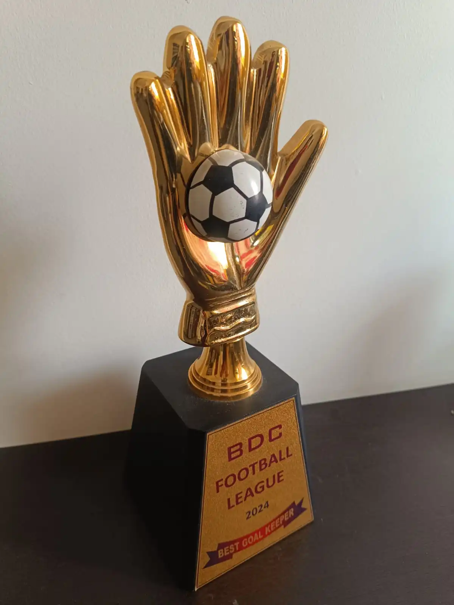
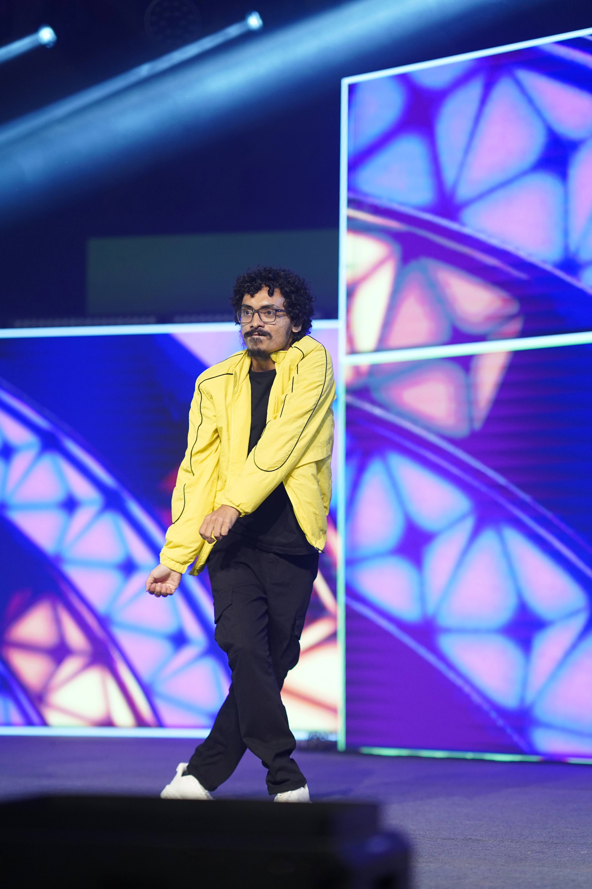
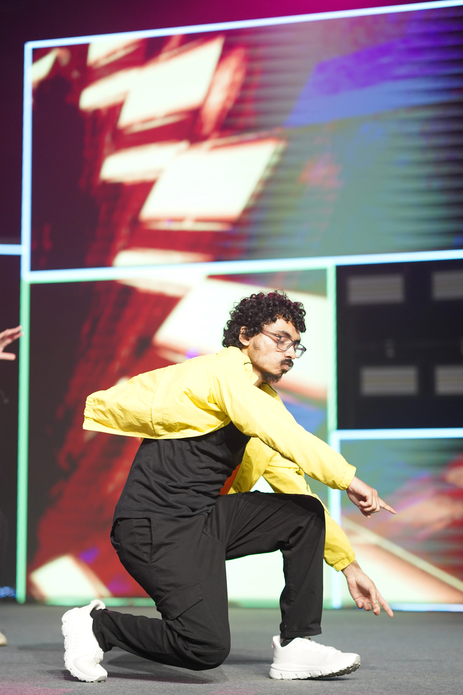

More About Me
Music
I was introduced to music pretty early in my life. I am pretty good at playing keyboard while I am trying to get better at other instruments like guitar and saxophone.
I have actively taken part in the music clubs of my college (NITK Music Club) and office (The 5-to-9ers). I have performed in dozens of live shows and collaborated with fellow musicians to create amazing music videos. The greatest crowning achievement of my musical journey was undoubtedly winning the Silver Trophy in the Rock category at the IFP 50-hour Music Challenge 2025 with my friends, for which I helped write, compose, arrange and sing our original song.
Sports
Since my schooldays, I have been quite active in sports. I regularly play football, cricket and badminton with friends and colleagues. I have participated in a few football corporate tournaments too.
I am also an avid runner and have completed a handful of 21-km half-marathons and several 10-km runs in the past few years. I am aiming and training to complete a full 42-km marathon this year.


Poetry
I enjoy writing poems and songs too, though it is admittedly not a regular practice. I tend to write only when I feel inspired to write, for whatever reason or on whatever topic. I like it that way, because it makes the writing feel unforced and natural.
Dance
Dance is a hobby that I have actively started picking up recently. I have started to enjoy freestyle and bollywood dances.

